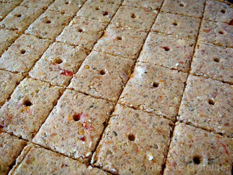
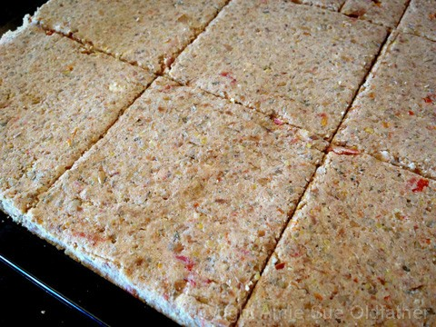

Pizzeria Pizza Crackers
raw / vegan / gluten-free
It’s time to take your taste buds on a trip to the savory stratosphere with these amazing Italian flavors. To give them that earthy pizza flavor, I used a blend of Italian seasoning, oregano, garlic and chili powder, red pepper flakes, and sun-dried tomatoes. This combination did not let me down.
We were born with the senses to recognize sweet, salty, sour, bitter, and umami, a savory flavor. But it isn’t always just about flavor. These crackers are firm and let’s face it, we are hardwired to enjoy crunchy sensations, they enhance the whole experience of eating. And fiddlesticks… I want you to have a pleasurable eating experience. :)
Now if we can enjoy such flavors and textures and it can still be healthy… then I think we will have a true winner on our hands. Chia seeds are an excellent source of healthy omega fatty acids, contains 700% more calcium than salmon, more antioxidants than flaxseeds or blueberries, and 500% more calcium than milk.
Sunflower seeds are known to provide anti-inflammatory benefits and are an incredible source of folic acid. They are also a great source of vitamin E, B-complex group vitamins, and are rich in magnesium! Shew, are you feeling healthy yet? :)
Lastly, I want to share that almonds have been proven to help to regulate cholesterol and blood pressure. They are high in antioxidants and an excellent source of calcium and fiber. Ok, we have flavor… we have texture and we have nutrients. Yes, I think it is safe to say that we have a winner here!
Ingredients:
110 small crackers or 16 large crust squares
- 1/2 cup sun-dried tomatoes, not soaked in oil
- 1 1/4 cups hot water
- 1 cup raw sunflower seeds, soaked, dehydrated & ground
- 1/3 cup flax or chia seeds, ground
- 2 Tbsp nutritional yeast
- 2 tsp dried oregano
- 1 Tbsp Italian seasoning
- 1 tsp garlic powder
- 1 tsp chili powder
- 1 tsp red pepper flakes
- 1/4 tsp sea salt
- 2 cups packed, moist almond pulp
- coarse sea salt for topping
Preparation:
- In a small bowl combine the sun-dried tomatoes and 1 1/4 cup of hot water.
- This will rehydrate the dried tomatoes, softening them for blending purposes. Set aside.
- In the food processor, fitted with the “S” blade, break the sunflower seeds down to a flour consistency.
- You can use just soaked sunflower seeds but you won’t be able to break them down to such a fine consistency. Either way is fine.
- Add the ground flax seeds, nutritional yeast, oregano, Italian seasoning, garlic powder, chili powder, red pepper flakes, and salt. Pulse to mix together. Place in a large bowl and add the almond pulp.
- In the same food processor, place the soaked tomatoes along with the soak water. Process until the tomatoes are blended. Pour over the dry ingredients.
- Remove all hand jewels and mix the cracker batter together. The batter should be moist and thick.
- Spread the batter 1/4″ thick onto the teflex sheet that comes with the dehydrator. Score into desired shapes and sizes.
- Dehydrate at 145 degrees F for 1 one hour, then reduce to 115 degrees F for an additional 10+/- hours, until dry.
- Break the crackers apart and store them on the countertop in an airtight container for about 2 weeks.
Culinary Explanations:
- Why do I start the dehydrator at 145 degrees (F)? Click (here) to learn the reason behind this.
- When working with fresh ingredients it is important to taste test as you build a recipe. Learn why (here).
- Don’t own a dehydrator? Learn how to use your oven (here). I do however truly believe that it is a worthwhile investment. Click (here) to learn what I use.

For another idea, you can score the batter into large 4×4″ squares to make open faced pizza treats.

© AmieSue.com